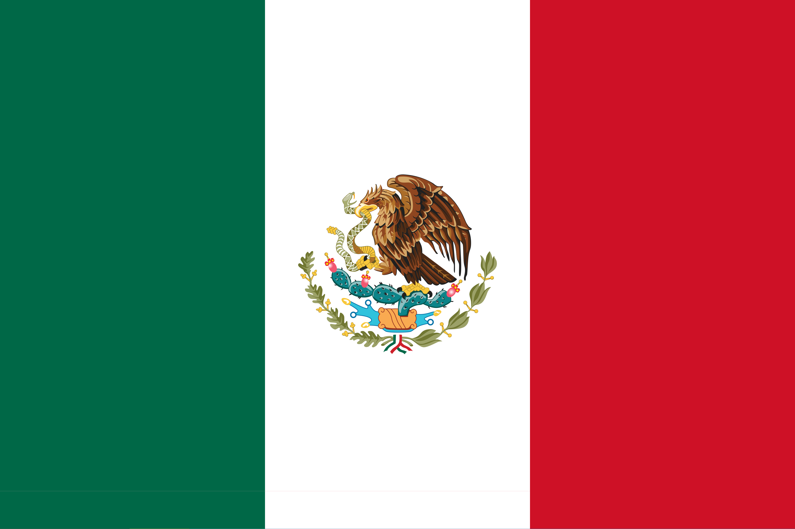

Serengeti National Park
Tanzania
The Serengeti National Park is a national park in Tanzania with an area of over 14,000 square kilometers. It has large populations of wildebeest, zebra, gazelle, lions, and other animals.
The Serengeti includes grassland plains, savannah, riverine forest and woodlands, and is one of the oldest ecosystems on earth. The site was placed on the UNESCO World Heritage List in 1981.
Galápagos Islands
 Ecuador
Ecuador
The Galápagos Islands are an archipelago of volcanic islands in the Eastern Pacific, located around the equator, 898 km west of the mainland of South America.
The Galápagos are famous for their large number of endemic species, which were studied by Charles Darwin in the 1830s and inspired his theory of evolution by means of natural selection. The islands are protected as part of Ecuador's Galápagos National Park and Marine Reserve.
Chichen Itza
Mexico
Chichen Itza was a large pre-Columbian city built by the Maya people of the Terminal Classic period. The archeological site is located in Tinúm Municipality, Yucatán State, Mexico.
The city was a major focal point in the Northern Maya Lowlands from the Classic and Postclassic periods (c. AD 600–1200). The site exhibits architectural styles reminiscent of central Mexico and of the Puuc and Chenes styles of the Northern Maya lowlands. The presence of central Mexican styles was once thought to have been representative of direct migration or even conquest from central Mexico, but most contemporary interpretations see the presence of these non-Maya styles more as the result of cultural diffusion.
Giant's Causeway
Ireland
The Giant's Causeway, on the north coast of County Antrim in Northern Ireland, is an area of about 40,000 interlocking basalt columns formed by ancient volcanic activity. The tops of the columns form stepping-stone like paths that lead from the cliff foot and disappear under the sea.
Designated a UNESCO World Heritage Site in 1986, the site is notable for its unique geology. According to Irish folklore, it was built by the giant Fionn mac Cumhaill